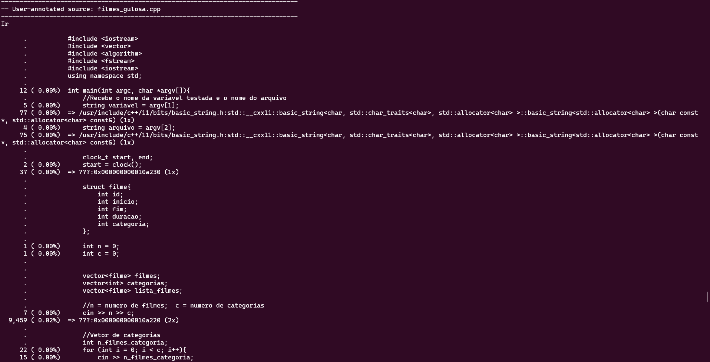
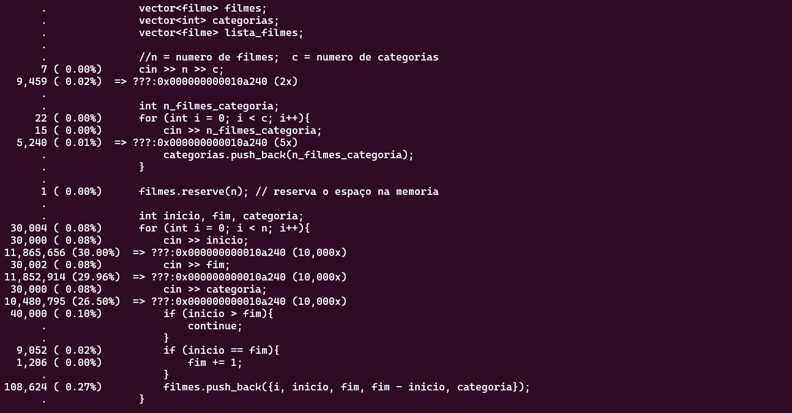
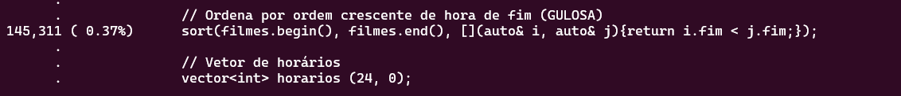
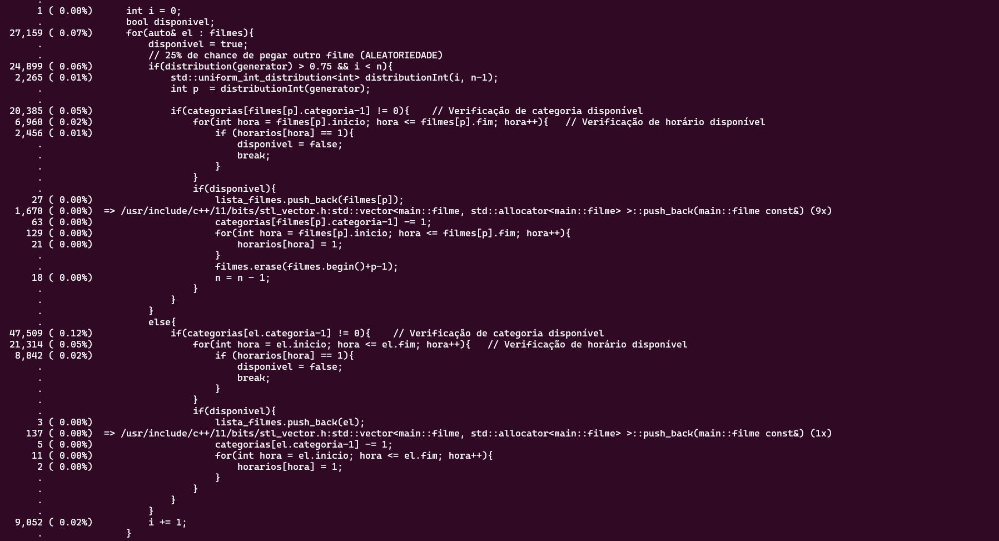
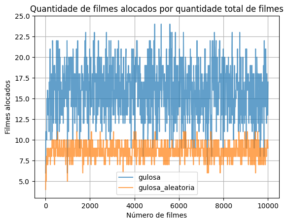
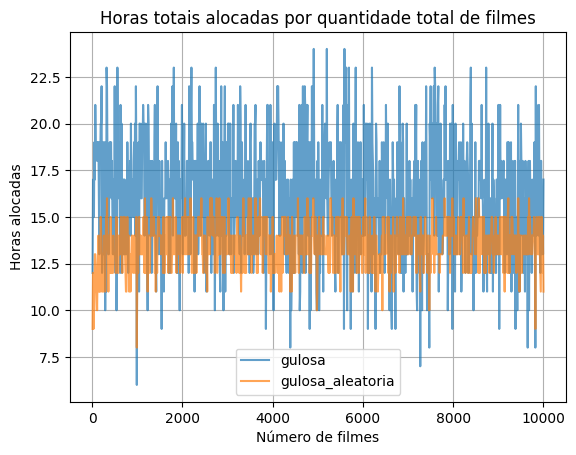
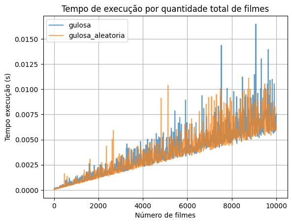
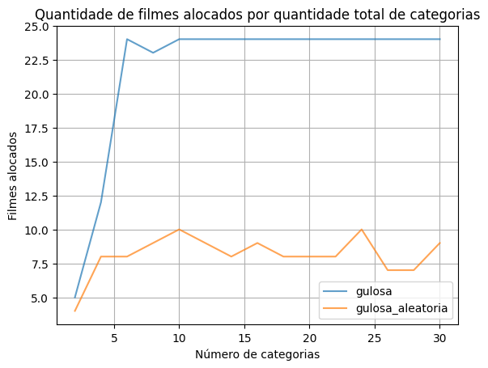
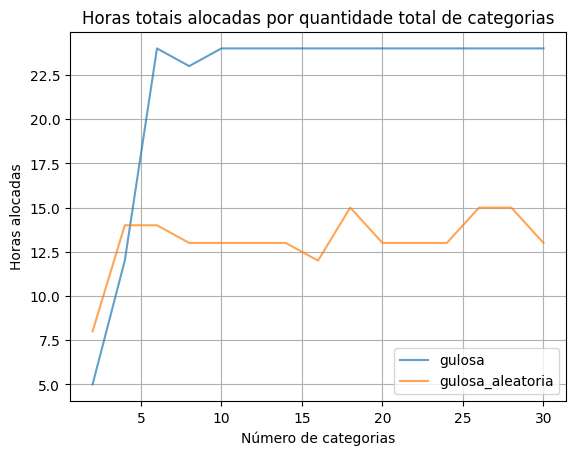
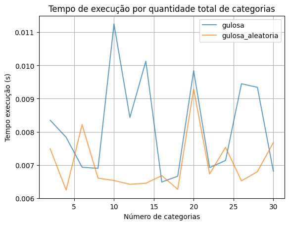

Relatório parcial: Maratona de Filmes
Nicolas Byung Kwan Cho
Problema
Alocar o máximo de filmes possíveis para assistir em um dia, dado uma lista de filmes com limitações em horário e categoria
Sendo assim, não é possível alocar um filme em horário em que outro filme já esteja alocado. Além disso, cada filme está classificado
em uma categoria, existindo um limite de filmes que podem ser assistidos de cada categoria.
Um exemplo de entrada que exemplifica uma lista de filmes a serem alocados, é dada por:
10 4
1 3 1 2
11 13 3
14 15 3
10 16 2
10 14 1
11 17 2
11 14 3
13 15 3
14 15 1
12 16 4
12 13 4
- A primeira linha indica o número de filmes envolvidos (10) e a quantidade de categorias (4)
- A segunda linha o número máximo de filmes que podem ser alocados por categoria (só pode ter 1 filme da categoria 0, por exemplo)
- Nas linhas seguintes, cada linha representa um filme. Da esquerda para direita estão: o horário de início do filme, o horário de fim e a categoria na qual se encaixa
Métricas e Variáveis
Para a alocação de um maior número possível de filmes, dados as restrições, serão utilizadas duas heurísticas diferentes para abordar o problema. No caso será testado
um algoritmo do tipo guloso e outro do tipo aleatório.
Entretanto, para classificar o desempenho de cada heurística é necessário definir quais métricas serão utilizadas para comparativo. Portanto, serão consideradas:
- O número total de filmes alocados
- O tempo total alocado (quantas horas do dia foram ocupadas)
- Tempo de execução de cada heurística
Além disso, não é suficiente que se teste os algoritmos para apenas 1 input fixo, pois é necessário avaliar a influência das variáveis no desempenho de cada heurística.
Portanto, gera-se inputs variando:
- A quantidade total de filmes a alocar em cada input
- O número de categorias possíveis em cada input
Para cada variável será gerado um batch de testes em que a variável testada muda por input enquanto as restantes se mantém. A média de duração de cada filme se mantém a mesma
para todos os testes neste relatório (2 horas).
Pipeline do projeto
Gerando inputs
Para gerar os inputs como descrito na sessão anterior, utiliza-se do script input_batch_generator.py localizado no diretótio scripts.
Esse script de geração recebe como argumentos os valores das variáveis e qual variável será iterada (testada). Como resultado, o script gera um novo
diretório contendo o batch de inputs correspondente aos argumentos passados.
Os comandos para rodar o script estão detalhados no READ.ME da raíz deste projeto
Executando o algoritmo
A execução do algoritmo se dá pelo script run_heuristics.py localizado em scripts. Esse script itera sobre as heurísticas presentes
no diretório heurisitcas e, para cada heurística, testa com todos os batches de input gerados na sessão anterior. O resultado de cada teste
é armazenado em um arquivo csv no diretório da heurística (results.csv)
Analisando desempenho
A análise de desempenho de cada heurística é realizada pelo jupyter notebook analysis.ipynb presente em scripts. Esse notebook coleta as informações
presentes nos csv's de resultado e armazena-os em dataframes (pandas). Assim é possível gerar gráficos e realizar medidas mais facilmente dos resultados coletados
Heurísticas
Gulosa
Input
O programa recebe como argumentos de linha de comando:
- Nome da variável testada
- Nome do arquivo de input
Em seguida, recebe do arquivo de input:
- n: Número de filmes no arquivo de input
- c: Número total de categorias no arquivo de input
Além disso, armazena o número máximo de filmes possíveis por categoria em um vetor:
Ex: Para o exemplo de input dado no começo do relatório, o vetor seria [1, 3, 1, 2]
Por fim, itera sobre as linhas do arquivo de input, armazenando os filmes em um vetor:
Os filmes são definidos por um struct filme com os campos de:
- id
- inicio
- fim
- duracao
- categoria
É importante notar que os filmes que terminam após as 23 horas e os que iniciam e terminam na mesma hora, não serão considerados e, portanto, são retirados da lista
Funcionamento
A heurística consiste constantemente utilizar uma estratégia ótima para contextos locais, esperando encontrar um ótimo em contexto global como resultado.
No caso o algoritmo sempre irá escolher o filme que tem o horário de encerramento mais cedo.
Para aplicar a heurística, primeiro ordena-se todos os filmes por horário de encerramento (do mais cedo para o mais tarde).
Em seguida, itera-se sobre os filmes, aramazenando-os na lista resultado e reduzindo em 1 o valor da categoria correspondente ao filme no vetor
de categorias.
Antes de adicionar um filme é necessário verificar:
- Se o filme que irá ser adicionado possui um horário de inicio posterior ao horário de fim do último filme adicionado a lista.
- Se a categoria do filme ainda permite a adição de mais filmes
Se passar nas duas condições, o filme é adicionado.
Output
O número de filmes alocados, o tempo de alocação total no dia e o tempo de execução são armazenados em uma nova entrada no arquivo csv do mesmo diretório (results.csv)

Profiling
O profiling foi realizado com um arquivo de input contendo 10000 filmes e 5 categorias.
No total o programa executou 38,232,014 instruções (considerando a execução de outros arquivos envolvidos nas bibliotecas utilizadas).

A leitura e alocação dos filmes do input em vetores são os maiores responsáveis pelo número de intrução: mais de 89% das instruções.
A execução do algoritmo em si foi responsável por apenas 0.68% das instruções totais. A ordenação dos filmes por horário de término, a parte mais custosa da heurística,
foi responsável por 0.38% das instruções.


Aleatória
Input
O programa recebe como argumentos de linha de comando:
- Nome da variável testada
- Nome do arquivo de input
Em seguida, recebe do arquivo de input:
- n: Número de filmes no arquivo de input
- c: Número total de categorias no arquivo de input
Além disso, armazena o número máximo de filmes possíveis por categoria em um vetor:
Ex: Para o exemplo de input dado no começo do relatório, o vetor seria [1, 3, 1, 2]
Por fim, itera sobre as linhas do arquivo de input, armazenando os filmes em um vetor:
Os filmes são definidos por um struct filme com os campos de:
- id
- inicio
- fim
- duracao
- categoria
É importante notar que os filmes que terminam após as 23 horas e os que iniciam e terminam na mesma hora, não serão considerados e, portanto, são retirados da lista
Funcionamento
Diferente da heurística gulosa, a aleatória tem um caráter mais abrangente (exploration) em relação as soluções encontradas.
No caso o algoritmo utiliza-se da aleatorização para causar imprevisibilidade e definir caminhos para soluções que não seriam encontradas pela heurística anterior.
Para esse algoritmo será implementada uma aleatorização em função da heurística anterior, ou seja, o vetor de filmes será ordenado com base no horário de término de cada filme,
e o vetor será iterado nessa ordem.
Porém, o algoritmo define que exista uma chance de 25% de não escolher o próximo filme do vetor para verificação de inclusão. Assim, será escolhido um filme aleatório no vetor
para verificação.
Antes de adicionar um filme é necessário verificar:
- Se o filme que irá ser adicionado não conflita com o horário de nenhum outro filme já incluso no resultado
- Se a categoria do filme ainda permite a adição de mais filmes
Para a primeira verificação é necessário criar um vetor de horários que mapeia se o horário está disponível ou não (bitmap -> vetor de 0 e 1). Quando um filme for alocado,
os horários correspondentes no bitmap mudarão de 0 para 1.
Se passar nas duas condições, o filme é adicionado.
Output
O número de filmes alocados, o tempo de alocação total no dia e o tempo de execução são armazenados em uma nova entrada no arquivo csv do mesmo diretório (results.csv)
Profiling
O profiling foi realizado com um arquivo de input contendo 10000 filmes e 5 categorias.
No total o programa executou 39,556,303 instruções (considerando a execução de outros arquivos envolvidos nas bibliotecas utilizadas).

A leitura e alocação dos filmes do input em vetores são os maiores responsáveis pelo número de intrução: mais de 86% das instruções.


A execução do algoritmo em si foi responsável por apenas 0.8% das instruções totais. Destaca-se a ordenação proveniente da heurística gulosa no programa, que é responsável
por 0.38% das instruções totais (similar ao profiling da heurística gulosa).



Resultados
Para os testes de heurística foram gerados dois batches de input:
- Batch variando número de filmes: 0 até 10000 filmes
- Batch variando número de categorias: 0 até 30 categorias
Cada métrica é então testada no arquivo analysis.ipynb com cada batch de input.
Os resultados para cada variável testada estão disponibilizadas abaixo:
Variando o número de filmes



Da variação do número de filmes é possível perceber que a heurística gulosa performa melhor que a aleatória tanto em quantidade de filmes alocados, quanto
em horas alocadas. É visível que o aumento na quantidade de filmes provoca melhor performance nas duas heurísticas, em relação a quantidade de filmes alocados,
mas rápidamente o fenômeno estabiliza-se, mantendo o desempenho quase inalterado.
Em relação ao tempo de execução, ambas as heurísticas apresentam crescimento conforme o número de filmes aumenta, o que é esperado, dado que o algoritmo deve
iterar sobre o vetor de filme. Entretanto, é possível observar que a heurística aleatória é mais consistente em tempos maiores de execução quando o número de filmes
é muito grande. A heurística gulosa apresenta tempos mairoes de execução no geral.
Variando o número de categorias



Um fenômeno similar ocorre ao variar o número de categorias, se comparado a variação no número de filmes. A heurística gulosa melhora rapidamente a quantidade de filmes e tempo alocados
quanto maior a quantidade de categorias, estabilizando-se em altos valores. Já a aleatória também apresenta certa influência, mas de forma bem reduzida,
estabilizando-se rapidamente em baixos valores.
Em relação ao tempo de excução, é notável que o aumento no número de categorias não influenciou muito a heurística aleatória. Em contrapartida, verifica-se vários
picos de tempo de execução para a heurística gulosa quando o número de categorias aumenta, expondo-se maior do que os valores da aleatória.